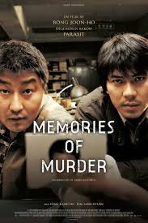
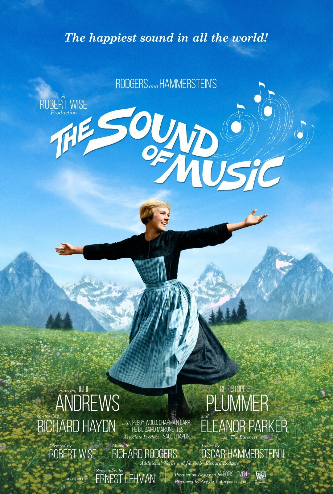
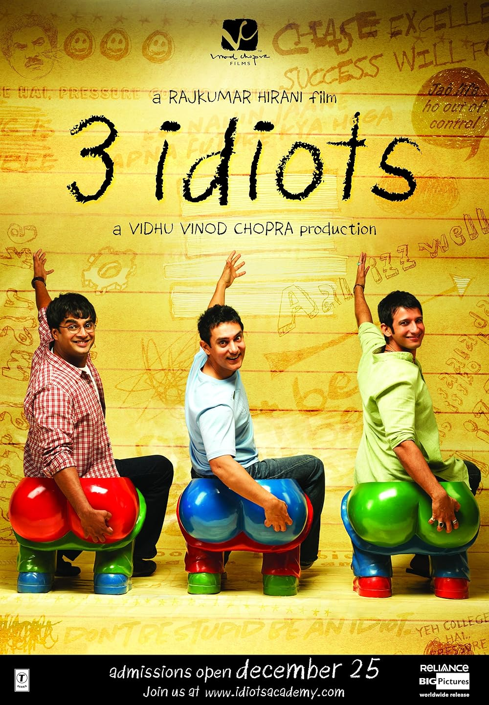

Durante los finales de los años 80s en la época de dictadura militar en Corea del Sur, dos detectives intentan capturar al culpable del primer caso de asesinatos seriales del país. Inspirada en hechos reales.
Años antes de la Segunda Guerra Munidal, Maria, una novicia en formación, es enviada como institutriz de los siete hijos del estricto viudo capitán Von Trapp y les devuelve el amor por la vida y la música en su hogar.
Al ingresar a la universidad de ingeniería, Farhan y Raju forman un gran vínculo con Rancho, un peculiar compañero con una visión positiva y refrescante de la vida. Años después, para cumplir con una apuesta, deciden buscar a su amigo perdido.
